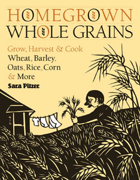
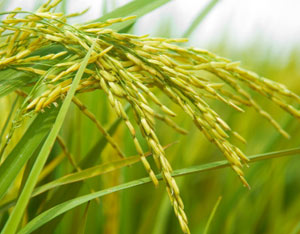

The following is an excerpt from Homegrown Whole Grains by Sara Pitzer (Storey, 2009). The excerpt is from Chapter 8: Rice.
Undoubtedly, rice is the most important grain in the world. Billions of people depend on it for sustenance. Growing it in the backyard, though, is challenging - but not impossible.
You’ll have the best luck with it if you live in the South (Texas, Louisiana, Arkansas, Mississippi, South Carolina, Florida or southern Missouri) or in California, which are areas where you can count on a long, warm growing season.
You can try your hand with rice no matter where you live by planting small amounts in plastic buckets and setting them in a sunny spot outside or indoors under lights. You won’t harvest enough rice to make a meal unless you plant many, many buckets, but this is a terrific way to learn and understand the steps that go into producing a rice crop. Have your children join in, and in the end, you’ll all understand why Asian cultures avoid dishonoring the farmer by never wasting a single grain of rice.
Botanical name: Oryza sativa
Season: Warm
Grain yield: 10 pounds per 100 square feet
Site: Full sun; warm temperatures; fertile, poorly drained soil
Days to harvest: 90 to 180
Gluten: No
Special consideration: Needs at least 40 continuous days with temperatures above 70 degrees Fahrenheit
Rice originated in dry areas, and over the years it has adapted to differing ecosystems.
Paddy or irrigated rice. Paddy rice grows where the farmer is able to control the water, pumping it in and out as needed over the growing season. Usually levees or berms (mounds of soil) are built around the growing area, which is kept flooded.
Deep-water rice. This type grows near rivers and other bodies of water. The farmer takes advantage of the natural rising and falling water levels but has no control over them. The rice must be able to tolerate periods of drought as well as flood.
Rain-fed lowland rice. In monsoonal regions, lowland farmers build levees around their fields to capture and hold the rain.
Upland rice. Upland rice will grow without flooding as long as the soil is kept moist. Typically, it is planted in areas with frequent rains. It may be grown in low-lying areas, on slopes, and even in drought-prone regions where irrigation water is readily available. Upland rice will be the best type for most people’s backyard crop.
In addition to ecological types of rice, there are varieties that have a long, medium or short grain, and ones with different textures and flavors, including sweet (also called glutinous), aromatic and arborio rices. You can use any of these types pretty much interchangeably in recipes, but you may be surprised at the differences in taste and texture among them.
Long-grain. Kernels of long-grain rice are long and slender, four or five times longer than wide. When cooked, they’re light and fluffy, and remain separate from each other. Long-grain rice tends to be a little drier than the others.
Medium-grain. Rice with medium grains is short and fat, two or three times longer than wide. They have the flavor of short-grained rice and the texture of the long-grained. Medium-grain rice cooks up moist, tender and slightly sticky with a creamy consistency.
Short-grain. Short-grain rice is nearly round and cooks into soft, sticky grains. The flavor of short grain rice is somewhat more sweet and pronounced than that of long-grain rice. This is the rice to use when making sushi.
Sweet. Sometimes called sticky rice, sweet rice is gooey when cooked. It’s often used in frozen products.
Aromatic. Aromatic rices have more flavor and fragrance than regular rice. Among the aromatic rices are:
Arborio. A large, medium-grain rice, arborio becomes creamy with a chewy center after cooking. It’s used primarily for risotto and other Italian dishes.
To grow rice, your garden must be in full sun and offer a three- to six-month growing season with average temperatures above 70 degrees Fahrenheit, water-retentive soil, a reliable source of water for irrigation, and a way to drain the water when you’re ready to harvest.
A level spot where water naturally stands after a rain is ideal. If your yard doesn’t have such a spot and the soil is well-drained, mixing copious amounts of organic matter, which holds moisture, into the soil combined with frequent watering will help.
It’s not necessary to keep the area flooded - just wet. (Some references suggest that flooding is used mainly to control weeds and to supply to the roots the nutrients dissolved in the water.)
Steady warm temperatures are almost more important than water supply. Rice is native to tropical and semitropical climates. Fluctuating temperatures below 70 degrees Fahrenheit can reduce the plants’ ability to resist disease. Night temperatures below 60 degrees Fahrenheit stunt their growth.
PREPARING THE PLOT
It will be easier to flood several small areas than one large one, so prepare several seed beds around the yard. Till or spade the beds, concentrating on getting rid of weeds, leveling the soil, and working in plenty of organic matter. Level ground ensures that if you decide to flood, the water depth will be the same over the entire bed.
You can prepare the soil in either fall or early spring. If you do so in fall, lightly go over it again in spring to hit any new weed growth. It’s especially important to eliminate weeds, to remove competition for nutrients.
Plant the rice in rows rather than in blocks so you can easily get in to weed. One approach is to dig trenches several inches apart, blocking or damming them at each end if you plan to flood the rows. The Japanese once used a similar technique, growing rice in the troughs and barley on the ridges. You could also build berms around the planting area to hold in water. Again, it’s not necessary to flood the growing area; just keep the soil wet.
PLANTING
The traditional planting method is to sow rice in a nursery bed, then move the seedlings to the garden after a month of growth.
In recent years, though, farmers have begun seeding directly into the planting bed.
The advantage of direct seeding is that you handle everything just once. Yields are larger because the plants don’t have to go through transplant shock, and it takes less seed to sow the bed. The advantage to nursery beds is that the beds’ smaller size makes it easier to keep weeds under control during the critical periods when seeds are germinating and seedlings are just getting started.
If your growing season is short, you can get a head start by sowing seeds indoors in flats under lights. Whatever method you use, wait until soil and air temperatures are in the neighborhood of 75 degrees Fahrenheit to plant outdoors.
You’ll need 1 to 2 ounces of seed per 100 square feet. Use the lesser amount if you’re direct sowing the seed and the greater amount when transplanting. Before you plant, prime the seed by soaking it in water for 12 to 36 hours.
Sow the primed seed in the garden, carefully tamping it down to ensure good contact with the soil. Cover with mulch. Water frequently and gently to keep soil moist. Young shoots should begin to appear in about a week. Thin the seedlings to 3 to 4 inches apart in rows 9 to 12 inches apart when they are 5 to 7 inches tall.
Transplanting. If you sowed the rice in a nursery bed, let the seedlings grow for about a month, or until they reach a height of 5 to 7 inches. Before transplanting them, thoroughly water the planting bed until it’s muddy. Gently pull up the seedlings and immediately transplant them, pushing them into the mud in rows about a foot apart.
Rice is sometimes transplanted in bunches with two or three seedlings in a “hill” and hills about 5 inches apart in the row. There are no rules, however; all you really need to do is give the plants enough space to grow fully and provide access for you to get in to weed.
Flooding. If you decided to try growing rice submerged in paddies, begin flooding the area when the seedlings are obviously up and growing or transplants have settled in. Commercial operations keep the rice continuously submerged under 8 inches of water, and as plants grow they increase the water level. At home you can flood the area with as little as 1 inch of water.
To help hold in the water, build 2- to 6-inch-tall berms around the planting area. Lining the sides of the berms with plastic sheets will help prevent water from seeping out of the sides.
When the plants are about 15 inches tall, drain the paddy to cultivate, then flood it again. Some rice gardeners recommend draining the paddy each night and flooding it again in the morning to discourage mosquitoes and to give plants access to sunlight and oxygen.
How long the rice should be flooded and how long it should be drained depends on soil conditions and weather. Experiment with adding more or less water and try to judge how the plants are responding.
Irrigated beds. If you don’t flood, water as often as necessary to keep the soil in the planting bed wet. Some ways to keep soil wet without breaking your budget are setting up a mister system and using a drip irrigation system or a soaker hose that runs continuously. Applying a deep layer of mulch after seedlings are up will help hold in soil moisture as well as keep weeds under control. Weed regularly so the rice plants don’t have to compete for nutrients.
If all you have is a sunny patio, you can still grow rice - in buckets. Granted, you won’t reap a huge harvest, but it’s a good activity to do with children and, if you choose an ornamental variety (like the purple-leaved cultivar ‘Red Dragon’) and an attractive container, it can even be decorative.
You will need one or more plastic buckets or other containers that have no drainage holes, water-retentive potting mix, and rice seeds that you have soaked for at least 12 hours.
Fill a bucket with a 4- to 6-inch-deep layer of potting soil. Submerge the soil in 4 to 6 inches of water. Sprinkle the seeds on the water; they’ll sink to the bottom.
Move the bucket to a warm, sunny spot. Top off the water as often as necessary.
After three to four months, when the rice begins to nod, drain the water. Let the rice continue to ripen. In two weeks, or when the heads are golden, harvest the rice by cutting just under the heads.
Bake the heads at 180 degrees Fahrenheit for an hour. After they’ve cooled, rub them to release the kernels from the hulls. Winnow, and the rice is ready to cook.
|
 STOREY PUBLISHING “Homegrown Whole Grains” will tell you how to convert part of your yard into a productive and beautiful field of grains, including barley, buckwheat, oats, wheat, rice, quinoa and more. |
 ISTOCKPHOTO/SZE FEI WONG Rice grows best in areas with long, warm growing seasons, but you can try your hand with rice no matter where you live by planting small amounts in plastic buckets and setting them in a sunny spot outside or indoors under lights. |
|